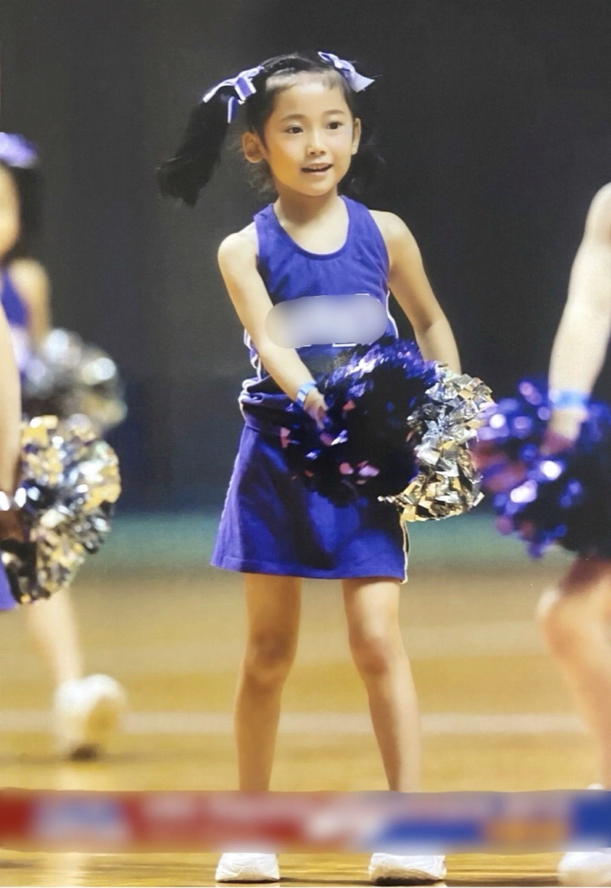
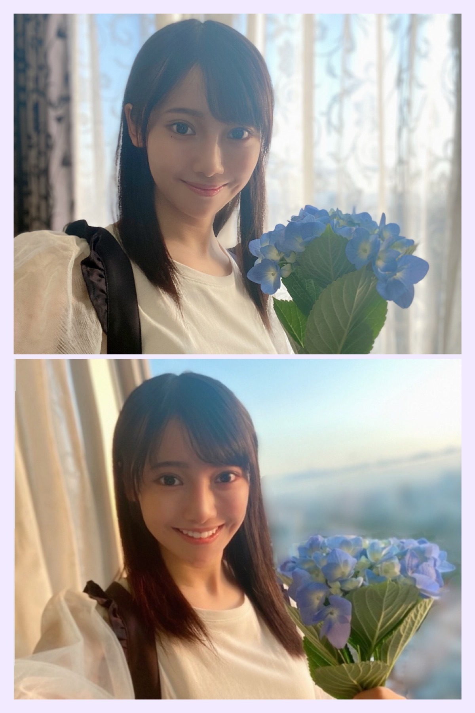
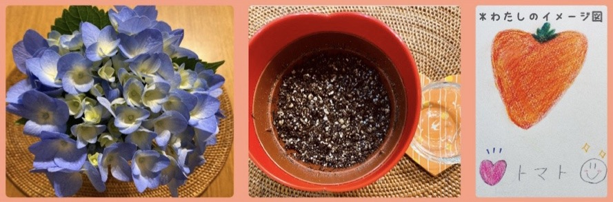
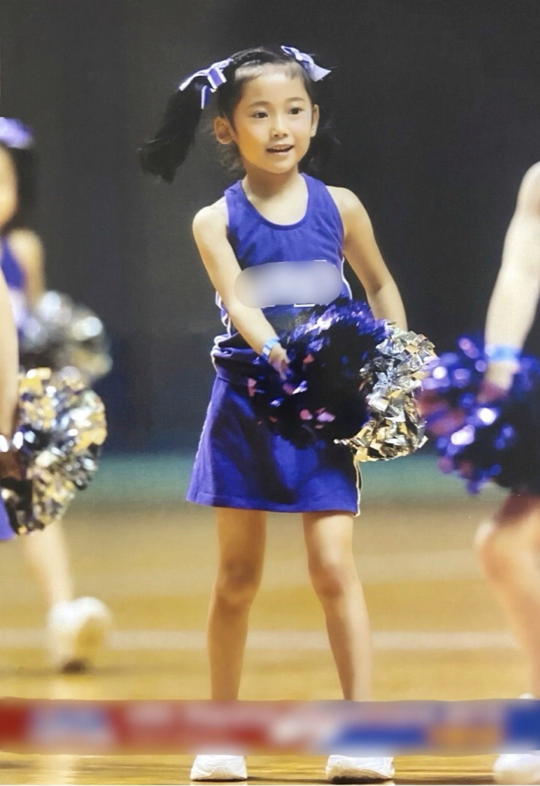
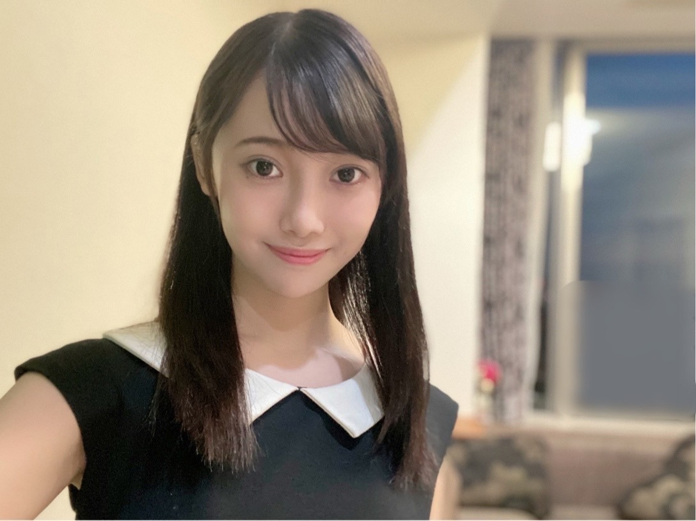

2020/0527Wed世界中の隣人よ ☺︎ 黒見明香
今週も残り半分ですね！ 今日もお疲れ様です✩︎⡱
ココを見つけてくださり ありがとうございます♪
乃木坂46 新４期生の黒見明香です。
すこーしだけ自己紹介させてくださいませ☺︎
♪:*:･･:*:･･:*:･･:*:･･:*:･･:*:･♪:*:･･:*:･･:*:･･:*:･･:*:･･:*:･♪
黒見 明香（くろみ はるか）
2004年1月19日生まれ 16才
香港生まれ・東京都出身です
あだ名： くろみん・黒見ちゃん
3の倍数9・6・3(くろみ)
と覚えてもらえたら嬉しいです♪
青いあじさいの花言葉は
♪:*:･･:*:･･:*:･･:*:･･:*:･･:*:･♪:*:･･:*:･･:*:･･:*:･･:*:･･:*:･♪

10年前 幼稚園のときの写真です☺︎
【 チアダンス 】
なぜか 園庭の『 犬小屋 』に籠もっていたそうです Σ（ﾟдﾟlll）
＊
ココを見つけてくださり ありがとうございます♪
乃木坂46 新４期生の黒見明香です。
すこーしだけ自己紹介させてくださいませ☺︎
♪:*:･･:*:･･:*:･･:*:･･:*:･･:*:･♪:*:･･:*:･･:*:･･:*:･･:*:･･:*:･♪
黒見 明香（くろみ はるか）
2004年1月19日生まれ 16才
香港生まれ・東京都出身です
あだ名： くろみん・黒見ちゃん
3の倍数9・6・3(くろみ)
と覚えてもらえたら嬉しいです♪
⭐︎ ミドルネーム・・・実は レイチェル！
HARUKA RACHEL KUROMI （HRKはるか）
・・・ちょと恥ずかしデス\(//∇//)\笑
（詳しくはコチラ↓ ）
♪:*:･･:*:･･:*:･･:*:･･:*:･･:*:･♪:*:･･:*:･･:*:･･:*:･･:*:･･:*:･♪
୨୧「世界中の隣人よ」のミュージックビデオ♬ ご覧になりましたかー？
୨୧「世界中の隣人よ」のミュージックビデオ♬ ご覧になりましたかー？
【 新曲「世界中の隣人よ」 のこと 】
"この部屋から祈ることしかできなくて"・・・
卒業された大好きな先輩方も、同じ想いや願いを一つに、
優しく歌われていて、胸がジーンとして温かい気持ちを頂きました。
心の美しさ、思い遣る心がまっすぐ伝わってきて
見る度にわたしも励まされています☺︎
また大切な作品に、畏れ多くもわたし達新メンバーまで
参加させて頂いたことにも心から感謝しています。
＊
神宮球場の、紫のサイリウムの美しい光。。
一つ 一つ が、私たちの大切な方で、、、一つが少し前の私で、
応援して下さるの皆さまも、尊敬する先輩方も、
こうして乃木坂を囲んでくださる みんなが
大好きな 大きな家族なんだなぁ。。と涙がこぼれました(；ω；)
少しでも辛い時の心の支え・安心できる場所になれますように✩︎⡱
大切なあなたの近くで寄り添えますように。
今日も働いてくださってる皆さま、
勉強がんばったあなた、
明日がんばろうかな、と思っているあなた、
今日もお疲れ様です！どうかまた会えるその日まで
もうしばらく、元気で待っててくださいね✩︎⡱
♪:*:･･:*:･･:*:･･:*:･･:*:･･:*:･♪:*:･･:*:･･:*:･･:*:･･:*:･･:*:･♪

ベランダで育てていた あじさい(紫陽花) が満開になったので
ベランダで育てていた あじさい(紫陽花) が満開になったので
「来年も花が咲くように・・・」と
剪定✂️をしました。（盆栽が趣味の祖母のような生活です;;）
＊
青いあじさいの花言葉は
『辛抱強い愛情』なのだそうです。
☂️雨に耐えて咲く姿から、連想されたというお話も！？
たくさんの花が集まって咲いているように見えることから
☀️『家族』という意味もあるそうです♪
＊
毎日疲れている方にも「世界中の隣人よ」が届きますように、
毎日疲れている方にも「世界中の隣人よ」が届きますように、
乃木坂という大きな家族が、ホッとできる場所になって
寄り添って、辛抱強く頑張る力になりますように、、、
とあじさい達にもお願いしました☺︎
♪:*:･･:*:･･:*:･･:*:･･:*:･･:*:･♪:*:･･:*:･･:*:･･:*:･･:*:･･:*:･♪

ハート型♡のトマト？も育て始めました☺︎無事育つと良いなぁ。。✨
自宅期間にベランダがちょっぴり賑やかになりました(*´-`)
【 乃木坂46時間TVのこと 】
46分オンライン記者会見＆乃木坂46分TV
何度見ても、過去の名作✨面白かったですよね〜♩
今回も何が起きるのか！？ 今から楽しみ☺︎
＊
先日４期生16人とビデオ通話で打ち合わせをして
「こんなことしたいねー！」とワクワク盛り上がっていました。
わたしは な、なんと、、、
マイクが入ってないことに全く気付いておらず....
「あの・・・あ、（喋りだし被っちゃった^^;;) お先にどうぞー！」
「それ良いなぁ〜」「わたしもやってみたいー！」
などとおしゃべりしていたのですが、
どうやらずっと独り言で 誰にも聞こえておらず、
口をパクパクとしながら、
ニコニコと 一人でボケてたただけの
イタイ画面だった模様です...\(//∇//)\汗
＊
本番でまたやらかしてしまわないよう、
いっぱい機械の勉強をして備えますヾ(･ω･*)
♬ *。♩*。♬
⚫︎2ショットトークしてみたい？
⚫︎46時間TVのイラストに出すかは分からないけどはるかちゃんの絵を書いているよ？
①＃乃木坂46 のイラスト募集
②メンバー2ショットトークのペア＆テーマ
③バーチャル背景用の写真or画像
④＃あつまれどうぶつの森 あなたの森を見せて！
募集中ですよー！
ぜひっ、#乃木坂46時間TV をつけて投稿して貰えたら
すっごく嬉しいです♡ （イラスト幸せすぎます✨）
一緒に乃木坂46時間TVを楽しめたらうれしいなー☺︎

10年前 幼稚園のときの写真です☺︎
【 チアダンス 】
香港から帰国後、インターナショナルスクールを経て、
日本の幼稚園に通い始めました。
＊
折り紙が折れなかったり、日本の童謡♫が分からなくて、
なぜか 園庭の『 犬小屋 』に籠もっていたそうです Σ（ﾟдﾟlll）
＊
先生に絵本を読み聞かせてもらう時も、
あぐらをかいて『テェッシュー プリーズ！』と
お願いしていたそうで、
先生ごめんなさいと反省しています\(//∇//)\汗
＊
そんなわたしを心配して、先生は元気になれる
「チアダンス」を薦めて下さいました。
松尾美佑ちゃんみたいに、カッコいい本当の
チアリーディング とは全くの別モノで、
ただ笑顔で『ごぉ！ふぁー！うぃぃぃー！』
(Go! Fight! Win! ♪)
と応援してるだけですが、笑顔が増えるのが嬉しくて
大好きになりました✨
＊
この当時から、運動神経がわるかったので、
この年、憧れのポンポンを持てたのは写真の10秒くらいで、
あとはなぜか「浮き輪」をかぶってフリフリする、という役でした( ´_ゝ`)
この時から、周りの方が ちょっぴり元気になってくれたり、
笑顔になってくれることが、１番嬉しいことだった気がします☺︎
＊
⚫︎黒見ちゃんは今後ショートカットにする予定はありますか？
⚫︎黒見ちゃんは今後ショートカットにする予定はありますか？
⚫︎過去に髪の毛を短くした事はありますか？
この頃から今までも、肩より短かったことがないのです、未経験。
いつかチャンスがあったらトライしてみたいです♬
♪:*:･･:*:･･:*:･･:*:･･:*:･･:*:･♪:*:･･:*:･･:*:･･:*:･･:*:･･:*:･♪

コメントや質問 ありがとうございます♡
初めてだよという方も、
どんな１日だったか報告して下さる方も、
大切な時間を使ってお話ししてくださり
本当にありがとうございます✨
大切に一つずつ読ませて頂いています((〃ω〃))
直接お話しできる時が、 待ち遠しいです✩︎⡱
＊
生活が変わり始める時期かもしれません
どうぞお疲れが出ませんように。。。
皆さんが少しでもリラックスできますように...✩︎⡱
と願っています(*´-`)
初めて会える日を、楽しみに待っています♪
＊
腕をギュって掴みに来てくれる美人な奈於ちゃんから
受け取った「直筆メッセージ入りラップバトン」
スマイルマークを足して、
ふざけてお互いの写真を撮り合ったりする
可愛い璃果ちゃんに渡しますねー！
読んでくださり、本当にありがとうございます☺︎
次回も、会えたら嬉しいなぁ✨
またねヾ(･ω･*)
くろみはるか☺︎
☆ 本日のあなたのラッキーナンバー：４ と ２
♪:*:･･:*:･･:*:･･:*:･･:*:･･:*:･♪:*:･･:*:･･:*:･･:*:･･:*:･･:*:･♪
・
・
・
＜こっそりアンコール♬ 笑＞
⚫︎剣術の写真みた！ドラクエの途中で仲間になりそうだね？
⚫︎今にも、うちらを剣術で敵から守ってくれそうじゃない？
-:-:-:୨୧:-:-:-୨୧:-:-:-
なんと くろみんが おきあがり
なかまに なりたそうに こちらをみている！
なかまにしてあげますか？
▶︎はい
いいえ
-:-:-:୨୧:-:-:-୨୧:-:-:-
いつか、大事な皆んなを守れる人になれるよう、
一生けんめい努めたいですヾ(≧ω≦. )
＊
⚫︎今、プロスピとウイイレはどんな感じ？調子は？
⚫︎くろみんの影響でプロスピを始めました笑 楽しんでる？
⚫︎甲子園中止になっちゃったけど、高校野球観たりする？
プロスピは今イベントをやりながらエナジーを貯めているよ！
ウイイレのスカウト引こうと思ってるよ〜
お互い欲しい選手が、どうか当たりますように✩︎⡱
プロ野球開幕しますね
甲子園に向けて毎日頑張ってきた皆んなにも、どうか光があたりますように>_<✨
その先まで、一緒に進んでいけるよう、私も少しでもそばで応援したいです☺︎
♬ *。♩*。♬
⚫︎このところ、乃木坂メンバーの写真集がいっぱい出てるよね！
くろみんちゃんは、誰かの写真集買った？
いつもとまた違った表情が見れてドキドキしますよね✨
一番最近は、今日発売される
堀未央奈さん♡ の「いつかの待ち合わせ場所」です✩︎⡱
表紙や特典違いですごーく悩みました☺︎
くすみブルーが世界一似合ってらして、凛として美しく憧れます♪
⚫︎乃木坂加入後のハッピーエピソード教えてほしい！
バースデーライブ最終日、新４期生５人とも、名古屋ドームの迫力に圧倒されっぱなしで、自己紹介を目前に、壁に向かって各自練習しながら、がちがちに緊張していました。
歯を磨きに廊下に出ると、たまたま秋元真夏さん♡にお会いし「あれっ、緊張してるぅ〜？？」てあの可愛らしい笑顔で聞いて下さり、忙しい本番前にもかかわらず、優しくアドバイスして下さいました。
マネージャーさんが「いつか『あの時緊張したね』って笑えるようになるといいね！」と声を掛けて下さって、この瞬間を決して忘れることないよう、５人でしっかり胸に刻みました♬
＊
また、昨日 賀喜遥香ちゃん♡が『はるかは、4期生に2人いるからkakimailがいいと思う〜！❁』とブログに書いて下さったこと、名前被りが申し訳なくご連絡したら、とーっても優しい嬉しいメッセージを下さいました✩︎⡱
はるかで良かったなぁと思わせてくれました((〃ω〃)) また直接お話しできる日が楽しみです✨
♬ *。♩*。♬
⚫︎くろみちゃんは学校の課題やってますか？
⚫︎受験生です 勉強やる気がでないからどーしたらいいかな？
私も教えて欲しいー笑
"ここまで終わったら、この番組が見れるー"とか"大好きなアイス食べれる！"とか決めて勉強したりするけど、ぼーっとしちゃう時あるよね^^;;
握手会で「がんばったよー！」って教えてくれたら嬉しいな♪一緒に喜べるようわたしも勉強も頑張る！一緒にがんばろう〜(๑˃̵ᴗ˂̵)و
♬ *。♩*。♬
⚫︎這篇書法最後蓋的姓名章的字體是篆體字嗎？是妳本人專屬的用印嗎？
是我自己專屬的印章，在學校的書道部中使用☺︎
⚫︎香港生まれましたから、広東語できますか？
広東語はまだ自己紹介しかできないので、お話しできるよう勉強したいです♩
もしよかったら、こちらも見てもらえたら嬉しいナ♡ ↓
＊
⚫︎剣術にも二刀流とかはありますか？
三国志の劉備さんが使っていたと言われる「双剣」もカッコイイですよねー！
私も長・短2本持っているので、最初両手でやってみたのですが、もう頭がこんがらかって蟹のハサミみたいになってしまいました...(･･;;むずかしい。。
⚫︎三国志の中一番好きな武将は誰？僕は趙雲だな。
姜維さんかなぁ？師匠の遺志を継いで、最期まで信じて戦い続けたところが、すごい武将だなぁて思いました。趙雲さんもすごく分かります。絶対的エース！居たら安心ですよね笑 魏呉蜀それぞれ個性的な人物が多くて選べないですよね(*´-`)笑
⚫︎中華街にある「関帝廟」は行ったことある？
あります♩関羽様が神様として祀られているので「関羽様・張飛・劉備」となぜか主君が"劉備"と呼び捨てで、仕えている家臣が "関羽様" 呼びな所も、なんだかほっこりしちゃうポイントですよね♬
三国志と平家物語の人形を展示している、渋谷区のギャラリー(無料だよ)もカッコ良くて、時々行ってしまいます✨
♬ *。♩*。♬
⚫︎私も運動が苦手なのですが、これだけは何故かできる‼︎というやつはありますか？
学校の体力テストで、◎柔軟性最高点、× 握力最低点(採点不可)だったー涙
前屈かなぁ・・・（運動なのかな...？？）
⚫︎はるかちゃんは泳げますか？？
1分で3m くらいなので、プール監視員の方にずっと見られます..Σ（ﾟдﾟll）
一生けんめいバタバタしててもなかなか進まない...(要ビート板)
♬ *。♩*。♬
⚫︎ブログにコメントしてる人の名前って覚えてくれてる？
⚫︎コメントに書いてある質問って、ノートとかに書き写してブログを書いているのですか？読んだだけで暗記は出来ませんしね...
もちろんです✨ノートに書かせていただいてるよ♪
まだ答えられてない質問は、の〜んびり待ってて下さったら嬉しいです☺︎
⚫︎女のファンとは何を話したいですか？？
⚫︎女の子のファンは嬉しいですか？
嬉しいー♡ガールズトークもいっぱいしたいなぁ✨
♬ *。♩*。♬
⚫︎963→310→ さて、次に来る3桁の数字は？
884 ですね！ クロミ、サトウ、ハヤシ・・天才ですね！
(34ちゃん、70ちゃんも♡）
⚫︎日向坂46の山口陽世ちゃんとの一言エピソードを知りたいです
わたしも含めて、みんなぱるの後ろから抱き付きがちです♡
⚫︎HARUKA RACHEL KUROMI ってHRKではるかって感じ？
すごい！実は今まで気付いてなかったです笑♩ブログ最初の自己紹介にさっそくのせさせて頂きました！ありがとうございます✨
⚫︎黒見ちゃんのサイリウムカラー，もう決まってたりしますか？
まだなのですー！ごめんなさい 絶賛悩み中です。
⚫︎なんて呼べばいい？握手会とかでも絶対そーやって呼ぶ！
くろみん、黒見ちゃん が嬉しいナ☺︎
♬ *。♩*。♬
✨㊗︎お誕生日の方、おめでとうございます✨
どうぞ楽しい一年になりますように✩︎⡱
♪:*:･･:*:･･:*:･･:*:･･:*:･･:*:･♪:*:･･:*:･･:*:･･:*:･･:*:･･:*:･♪
ここまで読んでくださったアナタ、ほんとうにありがとう♡
またねヾ(･ω･*)